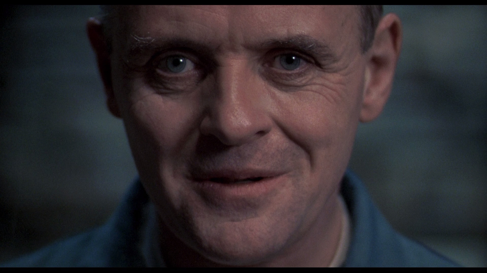

<div className='container'>
    <main>
        <section className="content-container">
            <section className="inner-container">
                <h1>About Bistro dé Lectér</h1>
                <div className="row">
                    
                    <blockquote>
                        'The bistro would be nothing without the people it serves.'
                        <cite>- Hannibal Lectér</cite>
                    </blockquote>
                </div>
                <p>One may picture, too, the sudden shifting of the attention, the swiftly spreading coils and bellyings of that blackness advancing headlong, towering heavenward, turning the twilight to a palpable darkness, a strange and horrible antagonist of vapour striding upon its victims, men and horses near it seen dimly, running, shrieking, falling headlong, shouts of dismay, the guns suddenly abandoned, men choking and writhing on the ground, and the swift broadening-out of the opaque cone of smoke. And then night and extinction--nothing but a silent mass of impenetrable vapour hiding its dead.</p>

                <p>So you understand the roaring wave of fear that swept through the greatest city in the world just as Monday was dawning--the stream of flight rising swiftly to a torrent, lashing in a foaming tumult round the railway stations, banked up into a horrible struggle about the shipping in the Thames, and hurrying by every available channel northward and eastward. By ten o'clock the police organisation, and by midday even the railway organisations, were losing coherency, losing shape and efficiency, guttering, softening, running at last in that swift liquefaction of the social body.</p>

                <p>All the railway lines north of the Thames and the South-Eastern people at Cannon Street had been warned by midnight on Sunday, and trains were being filled. People were fighting savagely for standing-room in the carriages even at two o'clock. By three, people were being trampled and crushed even in Bishopsgate Street, a couple of hundred yards or more from Liverpool Street station; revolvers were fired, people stabbed, and the policemen who had been sent to direct the traffic, exhausted and infuriated, were breaking the heads of the people they were called out to protect.</p>
            </section>
        </section>
    </main>
</div>
